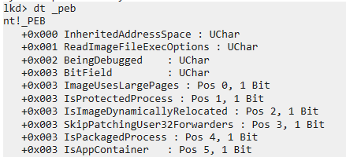
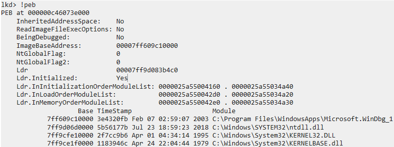

# PEB - Process Environment Block
•
https://docs.microsoft.com/en-us/windows/win32/api/winternl/ns-winternl-peb•
https://en.wikipedia.org/wiki/Process_Environment_Block•
https://www.geoffchappell.com/studies/windows/win32/ntdll/structs/peb/index.htmThe PEB - Process Environment Block - is an internal Windows data structure that contains information about a running process.
Most of the struct is undocumented.
It's typically only supposed to be used internally by the operating system.
If a process is running in userland, it has a PEB.
The PEB contains the lowest-level amount of information about a running process in userland.
For example:
• its
ImageBaseAddress• whether it's being debugged
• its
ImageSubsystem (console or GUI)
• the process's loaded DLLs - the
InMemoryOrderModuleList• etc.
## Where is it
In 32bit code, the PEB can be found in the
FS register at offset
0x30fs:[0x30]In 64bit code, the PEB can be found in the
GS register at offset
0x60gs:[0x60]The FS/GS registers store the TEB - Thread Environment Block.
The TEB has contains a pointer to the PEB called
ProcessEnvironmentBlock.
https://docs.microsoft.com/en-us/windows/win32/api/winternl/ns-winternl-pebIn a 32bit TEB, this is at offset
0x30In a 64bit TEB, this is at offset
0x60## What it looks like
• MSDN's documented version:
◇
https://docs.microsoft.com/en-us/windows/win32/api/winternl/ns-winternl-peb• x64dbg's
ntdll.h ◇ This is a pretty good up-to-date documentation.
◇
https://github.com/x64dbg/x64dbg/blob/84c50b1fe939570f5f91342a940c7ddedb2a8263/src/dbg/ntdll/ntdll.h#L2540• Geoff Chappel
◇ This is a good explanation of the PEB and its undocumented members
◇
https://www.geoffchappell.com/studies/windows/win32/ntdll/structs/peb/index.htmYou can also see what the PEB looks like in WinDbg with:
dt _pebor
!peb## More information
### Grab the ImageBaseAddress at Reserved3[1]
As of Windows 10 x64 (2004 19041.867),
you can grab the
ImageBaseAddress at
peb->Reserved3[1].
Means you don't have include undocumented structures in your code
or do arithmetic. Can just use
<winternl.h>#include <stdio.h>
#include <Windows.h>
#include <winternl.h>
int main(void)
{
PPEB p_peb = NULL;
#ifdef _WIN64
p_peb = (PPEB)__readgsqword(0x60);
#else
p_peb = (PPEB)__readfsdword(0x30);
#endif
void* pe_base = p_peb->Reserved3[1];
printf("pe_base: 0x%p \n", pe_base);
return 0;
}